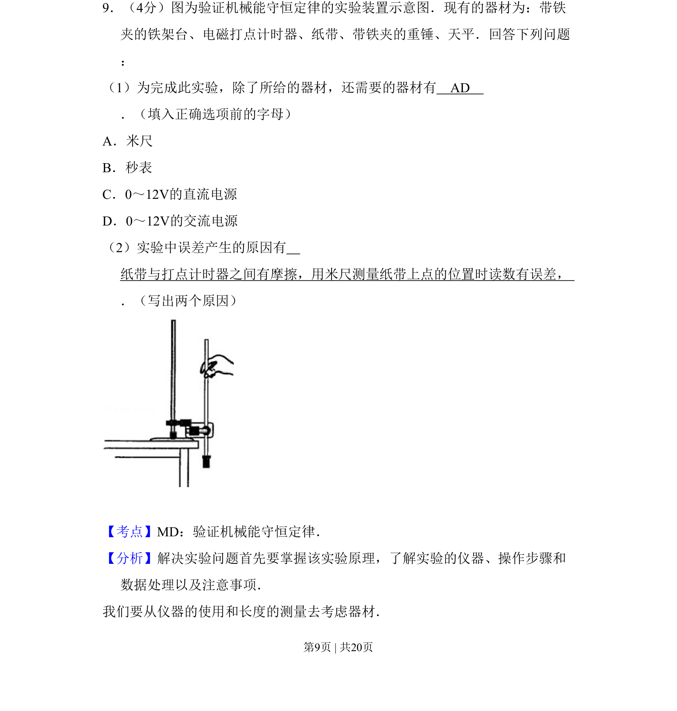
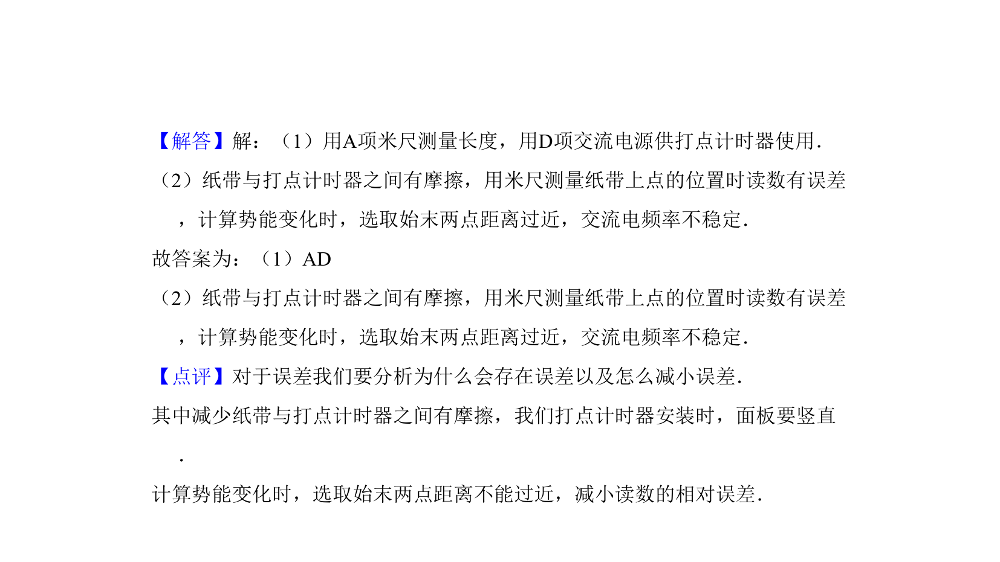

考点：验证机械能守恒定律 实验器材 误差分析

考查验证机械能守恒定律实验的器材选择和误差分析。

📄 原 PDF 第 9 页：
素材/真题/吉林/2008-2024·（吉林）物理高考真题/2010年高考物理试卷（新课标Ⅰ）（解析卷）.pdf
9．（4分）图为验证机械能守恒定律的实验装置示意图．现有的器材为：带铁 夹的铁架台、电磁打点计时器、纸带、带铁夹的重锤、天平．回答下列问题 ： （1）为完成此实验，除了所给的器材，还需要的器材有 AD ．（填入正确选项前的字母） A．米尺 B．秒表 C．0～12V的直流电源 D．0～12V的交流电源 （2）实验中误差产生的原因有 纸带与打点计时器之间有摩擦，用米尺测量纸带上点的位置时读数有误差， ．（写出两个原因）
【考点】MD：验证机械能守恒定律．菁优网版权所有 【分析】解决实验问题首先要掌握该实验原理，了解实验的仪器、操作步骤和 数据处理以及注意事项． 我们要从仪器的使用和长度的测量去考虑器材．